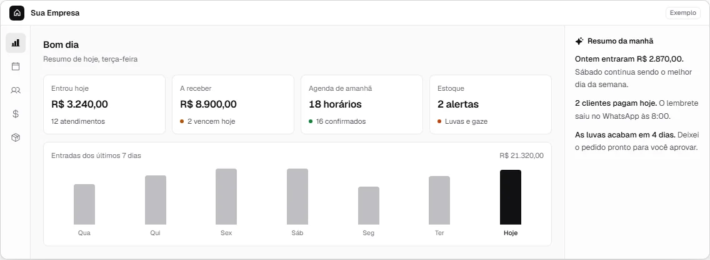
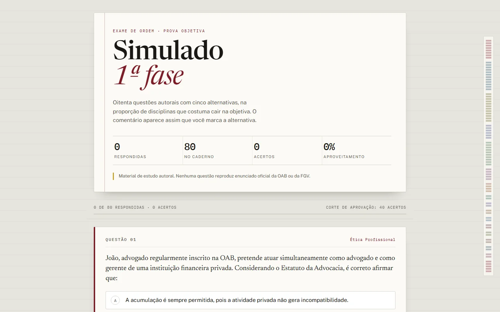
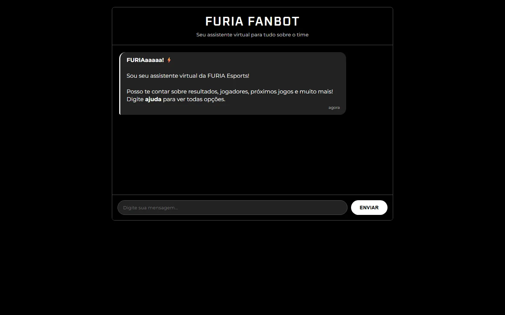

Company sites and landing pages that read well on a phone and send visitors straight to your WhatsApp or inbox.
In Portuguese, English or both.
Websites
Seen in Nuxio, Channel automation
Full-stack developer. CTO at Fast IA. Founder of Nuxio.
I build websites, custom business systems and AI automation for companies in Brazil and abroad.
Company sites and landing pages that read well on a phone and send visitors straight to your WhatsApp or inbox.
In Portuguese, English or both.
Seen in Nuxio, Channel automation
Software built around how your company already works: scheduling, clients, stock, deliveries, finance.
Your team keeps its routine and drops the spreadsheets.
Seen in Fast IA platform, Nuxio, Payment wallet API
Assistants that answer on WhatsApp, tools that read documents and audio, and routines that do the repeat work.
I use AI where it has a clear job, and keep a person checking where a mistake costs money.
Seen in Fast IA platform, Sem Play, Document reader
Each case starts with the business problem, then what I built and what shows it works. Fast IA comes first, without clients, screens or numbers.
I am the CTO. Fast IA applies AI to business: WhatsApp agents for clinics and companies, a CRM with AI and custom systems. I design the architecture and write much of the code.
Leads, conversations and follow-up in one place, built on the same platform, so the team works from what the AI already collected.
Supabase, TypeScript, React
A golden dataset, multi-turn conversation simulation and cost per conversation, so a prompt or model change is measured before it reaches a customer.
TypeScript, Deno, LLM evaluation
A pipeline that collects a local business's public data with Apify, builds a preview landing page and renders a video from it, automatically.
Apify, Playwright, ffmpeg, Python
Panels for the team: platform health, agent activity and cost in one view.
TypeScript, SQL, Supabase
Custom management systems with AI, for companies that still run on paper, spreadsheets and WhatsApp.
Visit nuxio-app.vercel.app The code is private.

Products I run and maintain myself, and projects built for clients. Each note says which.
Open the tool The interface is in Portuguese.

80 original practice questions for the first phase of the Brazilian bar exam, with an explanation for each answer and a performance report at the end. One static page, no build step.
Open the exam
A chat interface for fans of FURIA Esports with results, schedule and roster. A fan project with scripted answers, in plain HTML, CSS and JavaScript.
Open the botA short call or WhatsApp chat about how your company works today and where it gets stuck. I tell you what is worth building first, even when the answer is a simple site.
Scope, timeline and price on paper before I start. You know what you get and when.
You see each stage working and approve what goes live.
I publish it, train your team and keep adjusting after launch.